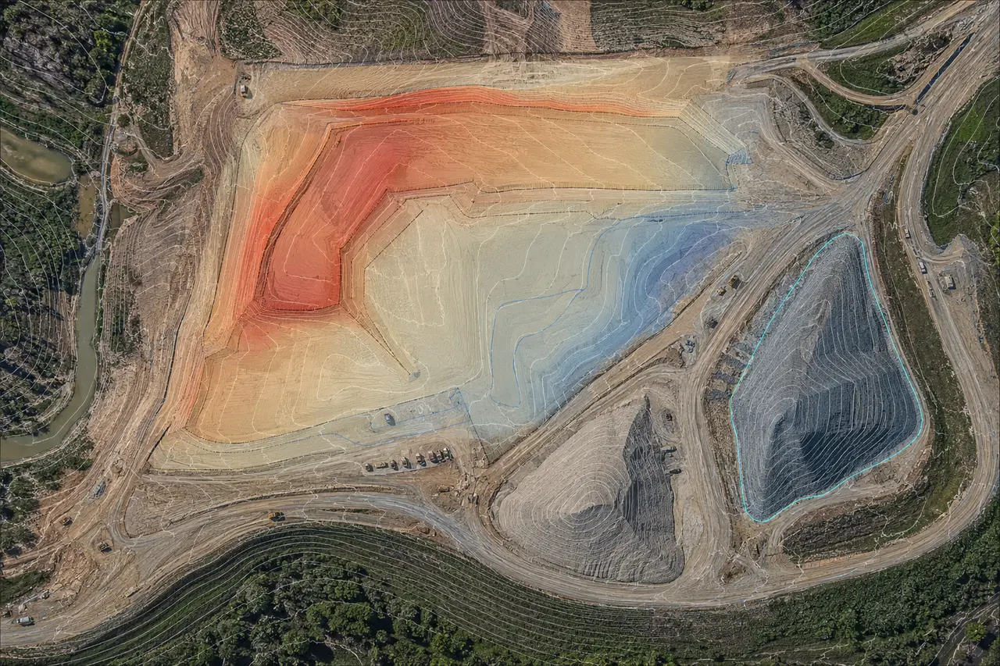

PRODUCTION-FIRST
LiDAR & Point-Cloud Processing
Classification, cleanup, registration, QA/QC, surface generation, feature extraction, deliverable preparation and production overflow.
LAS / LAZDTM / DSMContoursQA/QC
SAN ANTONIO • TEXAS • REMOTE PRODUCTION + FIELD SUPPORT
LiDAR, photogrammetry, point clouds, aerial imaging, scanning, GIS and CAD production for teams that need dependable geospatial output without adding permanent overhead.

CORE CAPABILITIES
Wise can support a complete capture-to-deliverable workflow or step in downstream as a production partner when your team already has imagery, LiDAR, scans, control or field data.
PRODUCTION-FIRST
Classification, cleanup, registration, QA/QC, surface generation, feature extraction, deliverable preparation and production overflow.
Orthomosaics, 3D models, surface products, progress comparisons, cut/fill support and volume calculations.
Site documentation, roofs, exteriors, corridors, progress imagery and repeatable field capture.
Scan organization, registration support, existing-condition datasets and model-ready point clouds.
Asset inventories, spatial databases, utility/infrastructure support, field-data organization and mapping.
Drafting, surfaces, conversion, mapping and flexible overflow production for technical teams.
SELECTED APPLICATIONS
These demonstration visualizations show the types of technical outputs Wise Geospatial can build from LiDAR, imagery, thermal data and field capture. They are representative examples, not client project claims.
DEMONSTRATION VISUALIZATIONLIDAR + POINT CLOUDS
Turn dense scan or LiDAR data into a navigable record of facilities, terrain and site features for planning, coordination and downstream production.

DEMONSTRATION VISUALIZATIONCONSTRUCTION + MATERIALS
Combine aerial imagery, surfaces and repeat capture to support grading visibility, stockpile quantities and change documentation.
 DEMONSTRATION VISUALIZATION
DEMONSTRATION VISUALIZATIONENERGY + INFRASTRUCTURE
Organize imagery, terrain and GIS features into a corridor view that supports access, crossings, change review and field coordination.
 DEMONSTRATION VISUALIZATION
DEMONSTRATION VISUALIZATIONTHERMAL + BUILDING DATA
Align visible and thermal imagery to make temperature patterns, rooftop assets and areas for closer review easier to communicate.
WHERE WE FIT
Quantities, grading progress, existing conditions, site intelligence and closeout documentation.
VOLUMES • SURFACES • PROGRESSPipeline/ROW mapping, facility documentation, thermal-data processing, GIS and remote-sensing support.
CORRIDORS • THERMAL • ASSETSProduction overflow for LiDAR, photogrammetry, point clouds, CAD, GIS and UAS datasets.
OVERFLOW • QA/QC • PRODUCTIONStockpile volumes, inventory snapshots, surface change, mine/site mapping and reconciliation support.
INVENTORY • CHANGE • VOLUMESRoof/exterior imagery, existing-condition capture, redevelopment documentation and site mapping.
CAPTURE • CONDITION • 3DRepeatable inspection imagery, thermal support, exterior documentation and high-volume capture workflows.
ROOFS • THERMAL • DOCUMENTATIONHOW WE WORK
No complicated consulting engagement required. Define the outcome, share the available data, and build the scope around the deliverable.
What do you need to measure, document, model or communicate?
Existing LAS/LAZ, imagery, scans, GIS, CAD, control—or new capture requirements.
Processed spatial data, imagery, surfaces, maps, models or technical production files.
ABOUT WISE GEOSPATIAL
Wise Geospatial is a San Antonio-based technical services company focused on turning field and remote-sensing data into useful project information.
The work is grounded in hands-on survey technology, UAS operations, spatial-data production and project support across construction, infrastructure and related industries.
START A PROJECT
Raw LiDAR? A site that needs mapped? Thermal imagery that needs organized? A production backlog? Give us the basics and we’ll identify the cleanest deliverable.